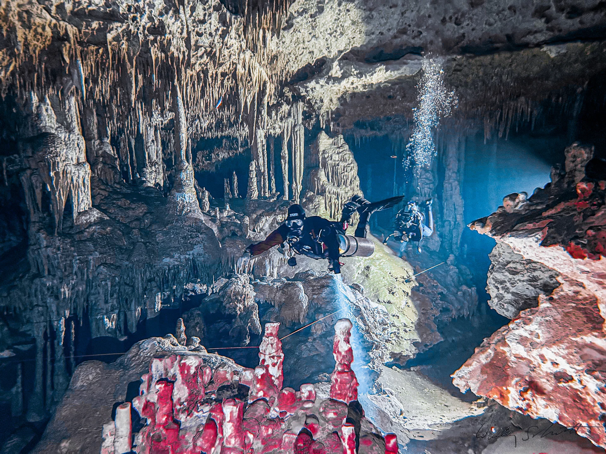

Cenote photographs make an impression. The next step is understanding what kind of experience they show. A guided cavern dive and a fully trained cave dive are different activities.

Devocean’s article introduces that distinction and the mindset behind an overhead environment. Start by discussing your certification and recent experience with the team rather than choosing a dive from a photograph alone.
This is a short introduction to the original article.
Read the full original story